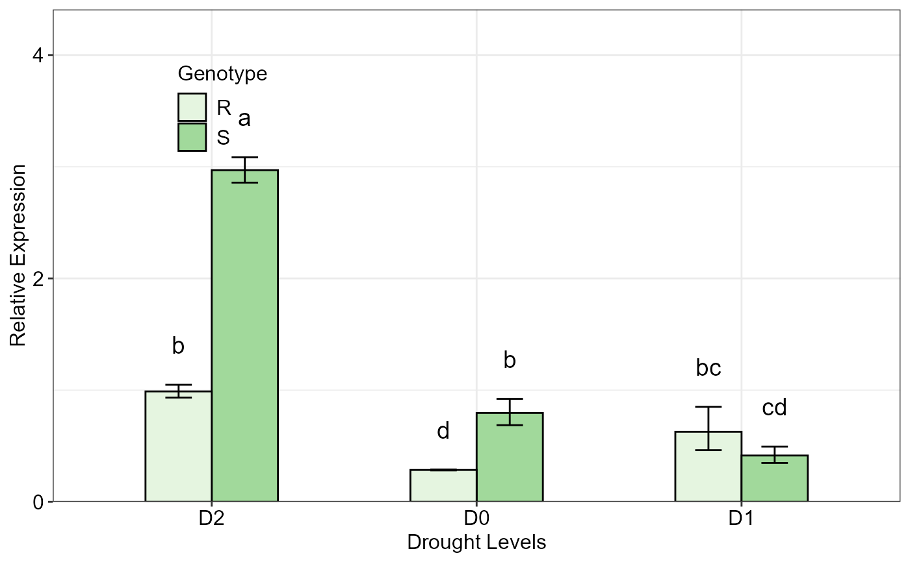
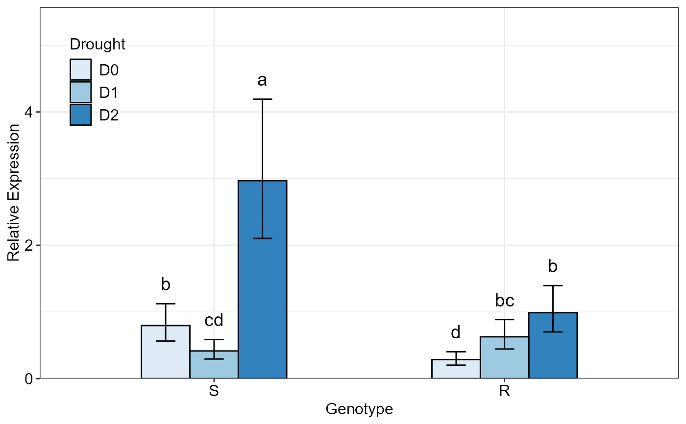
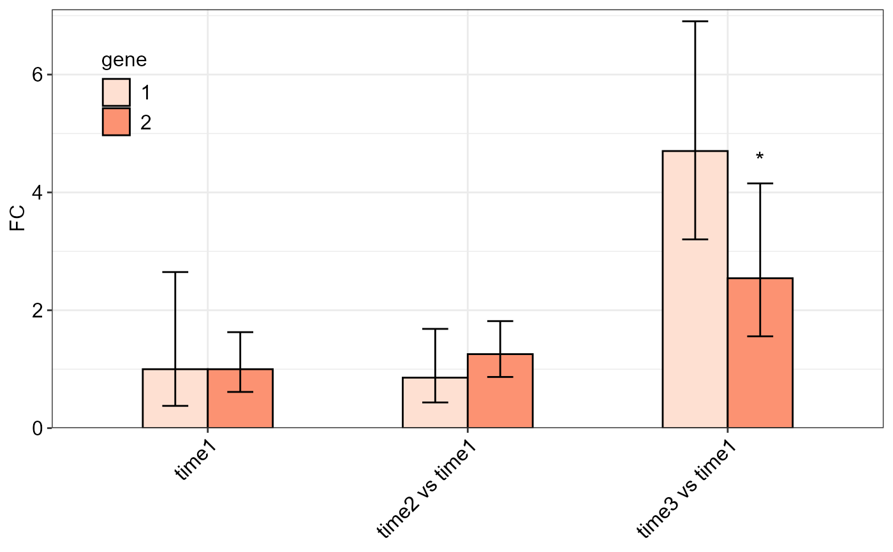

qpcrANOVARE output of a two-factorial experiment dataR/twoFACTORplot.r
twoFACTORplot.RdBar plot of the relative expression (\(\Delta C_T\) method) of a gene along with the standard error (se), 95% confidence interval (ci) and significance
twoFACTORplot(
res,
x.axis.factor,
group.factor,
width = 0.5,
fill = "Blues",
y.axis.adjust = 0.5,
y.axis.by = 2,
show.errorbars = TRUE,
errorbar,
show.letters = TRUE,
letter.position.adjust = 0.1,
ylab = "Relative Expression",
xlab = "none",
legend.position = c(0.09, 0.8),
fontsize = 12,
fontsizePvalue = 5,
axis.text.x.angle = 0,
axis.text.x.hjust = 0.5
)the FC data frame created by qpcrANOVARE(x)$Result function on a two factor data such as data_2factor.
x-axis factor.
grouping factor.
a positive number determining bar width.
specify the fill color vector for the columns of the bar plot. One of the palettes in display.brewer.all (e.g. "Reds" or "Blues", ...) can be applied.
a negative or positive number for reducing or increasing the length of the y axis.
determines y axis step length.
show errorbars
Type of error bar, can be se or ci.
a logical variable. If TRUE, mean grouping letters are added to the bars.
adjust the distance between the grouping letters to the error bars.
the title of the y axis.
the title of the x axis.
a two digit vector specifying the legend position.
size of all fonts of the plot.
font size of the pvalue labels
angle of x axis text
horizontal justification of x axis text
Bar plot of the average fold change for target genes along with the standard error or 95% confidence interval as error bars.
The twoFACTORplot function generates the bar plot of the average fold change for target genes along with the significance, standard error (se) and the 95% confidence interval (ci) as error bars.
# See a sample data frame
data_2factor
#> Genotype Drought Rep EPO POCt EGAPDH GAPDHCt
#> 1 R D0 1 2 33.30 2 31.53
#> 2 R D0 2 2 33.39 2 31.57
#> 3 R D0 3 2 33.34 2 31.50
#> 4 R D1 1 2 32.73 2 31.30
#> 5 R D1 2 2 32.46 2 32.55
#> 6 R D1 3 2 32.60 2 31.92
#> 7 R D2 1 2 33.48 2 33.30
#> 8 R D2 2 2 33.27 2 33.37
#> 9 R D2 3 2 33.32 2 33.35
#> 10 S D0 1 2 26.85 2 26.94
#> 11 S D0 2 2 28.17 2 27.69
#> 12 S D0 3 2 27.99 2 27.39
#> 13 S D1 1 2 30.41 2 28.70
#> 14 S D1 2 2 29.49 2 28.66
#> 15 S D1 3 2 29.98 2 28.71
#> 16 S D2 1 2 29.03 2 30.61
#> 17 S D2 2 2 28.73 2 30.20
#> 18 S D2 3 2 28.83 2 30.49
# Before generating plot, the result table needs to be extracted as below:
res <- qpcrANOVARE(data_2factor, numberOfrefGenes = 1, block = NULL)$Result
#> Analysis of Variance Table
#>
#> Response: wDCt
#> Df Sum Sq Mean Sq F value Pr(>F)
#> T 5 20.5489 4.1098 26.267 4.515e-06 ***
#> Residuals 12 1.8775 0.1565
#> ---
#> Signif. codes: 0 '***' 0.001 '**' 0.01 '*' 0.05 '.' 0.1 ' ' 1
#>
#> Relative expression table
#> Genotype Drought RE LCL UCL se Lower.se Upper.se letters
#> 1 S D2 2.9690 2.1030 4.1918 0.0551 2.8577 3.0846 a
#> 2 R D2 0.9885 0.7002 1.3956 0.0841 0.9325 1.0478 b
#> 3 S D0 0.7955 0.5635 1.1232 0.2128 0.6864 0.9219 b
#> 4 R D1 0.6271 0.4441 0.8853 0.4388 0.4626 0.8500 bc
#> 5 S D1 0.4147 0.2937 0.5854 0.2540 0.3478 0.4945 cd
#> 6 R D0 0.2852 0.2020 0.4026 0.0208 0.2811 0.2893 d
# Plot of the 'res' data with 'Genotype' as grouping factor
twoFACTORplot(res,
x.axis.factor = Drought,
group.factor = Genotype,
width = 0.5,
fill = "Greens",
y.axis.adjust = 1,
y.axis.by = 2,
ylab = "Relative Expression",
xlab = "Drought Levels",
letter.position.adjust = 0.2,
legend.position = c(0.2, 0.8),
errorbar = "se")

# Plotting the same data with 'Drought' as grouping factor
twoFACTORplot(res,
x.axis.factor = Genotype,
group.factor = Drought,
xlab = "Genotype",
fill = "Blues",
fontsizePvalue = 5,
errorbar = "ci")

# Combining FC results of two different genes:
a <- qpcrREPEATED(data_repeated_measure_1,
numberOfrefGenes = 1,
factor = "time", block = NULL, plot = FALSE)
#> Warning: The level 1 of the selected factor was used as calibrator.
#> Type III Analysis of Variance Table with Satterthwaite's method
#> Sum Sq Mean Sq NumDF DenDF F value Pr(>F)
#> time 11.073 5.5364 2 4 4.5382 0.09357 .
#> ---
#> Signif. codes: 0 '***' 0.001 '**' 0.01 '*' 0.05 '.' 0.1 ' ' 1
#>
#> Fold Change table
#> contrast FC pvalue sig LCL UCL se Lower.se Upper.se
#> 1 time1 1.0000 1.0000 0.0000 0.0000 1.4051 0.3776 2.6484
#> 2 time2 vs time1 0.8566 0.8166 0.0923 7.9492 0.9753 0.4357 1.6841
#> 3 time3 vs time1 4.7022 0.0685 . 0.5067 43.6368 0.5541 3.2026 6.9040
b <- qpcrREPEATED(data_repeated_measure_2,
factor = "time",
numberOfrefGenes = 1, block = NULL, plot = FALSE)
#> Warning: The level 1 of the selected factor was used as calibrator.
#> NOTE: Results may be misleading due to involvement in interactions
#> Type III Analysis of Variance Table with Satterthwaite's method
#> Sum Sq Mean Sq NumDF DenDF F value Pr(>F)
#> time 5.9166 2.95832 2 8 3.4888 0.08139 .
#> treatment 0.6773 0.67728 1 4 0.7987 0.42199
#> time:treatment 6.3186 3.15932 2 8 3.7258 0.07186 .
#> ---
#> Signif. codes: 0 '***' 0.001 '**' 0.01 '*' 0.05 '.' 0.1 ' ' 1
#>
#> Fold Change table
#> contrast FC pvalue sig LCL UCL se Lower.se Upper.se
#> 1 time1 1.0000 1.0000 0.0000 0.0000 0.7036 0.6140 1.6286
#> 2 time2 vs time1 1.2556 0.5540 0.4381 3.5987 0.5323 0.8682 1.8159
#> 3 time3 vs time1 2.5432 0.0351 * 0.8873 7.2895 0.7074 1.5575 4.1527
a1 <- a$FC_statistics_of_the_main_factor
b1 <- b$FC_statistics_of_the_main_factor
c <- rbind(a1, b1)
c$gene <- factor(c(1,1,1,2,2,2))
c
#> contrast FC pvalue sig LCL UCL se Lower.se Upper.se gene
#> 1 time1 1.0000 1.0000 0.0000 0.0000 1.4051 0.3776 2.6484 1
#> 2 time2 vs time1 0.8566 0.8166 0.0923 7.9492 0.9753 0.4357 1.6841 1
#> 3 time3 vs time1 4.7022 0.0685 . 0.5067 43.6368 0.5541 3.2026 6.9040 1
#> 4 time1 1.0000 1.0000 0.0000 0.0000 0.7036 0.6140 1.6286 2
#> 5 time2 vs time1 1.2556 0.5540 0.4381 3.5987 0.5323 0.8682 1.8159 2
#> 6 time3 vs time1 2.5432 0.0351 * 0.8873 7.2895 0.7074 1.5575 4.1527 2
twoFACTORplot(c, x.axis.factor = contrast,
group.factor = gene, fill = 'Reds',
ylab = "FC", axis.text.x.angle = 45,
errorbar = "se", y.axis.adjust = 1,
axis.text.x.hjust = 1)
